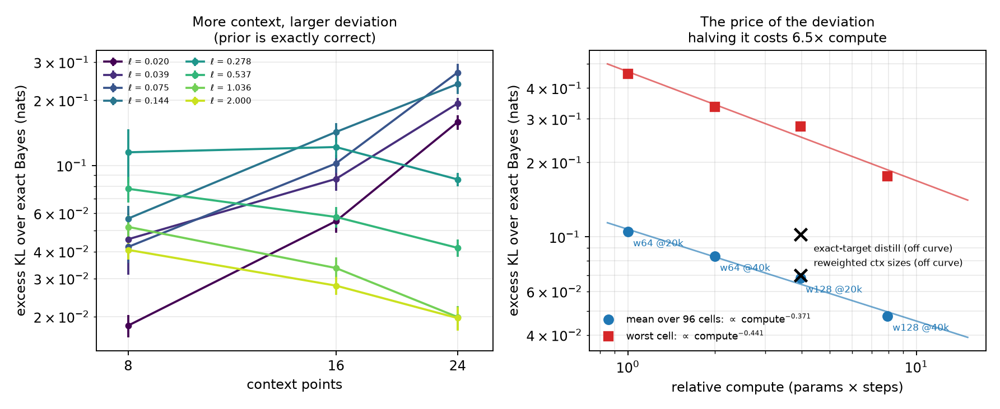

先验完全正确、数据严格来自先验。96 个格子，四个训练设置，跨 8 倍算力。

把网络输出与精确后验分别投影回单个隐变量的 GP 后验族。判据是按真值落在先验均值哪一侧分组。
| 坐标 | 分组 | w64@20k | w64@40k | w128@20k | w128@40k | 判定 |
|---|---|---|---|---|---|---|
| log ℓ | 先验均值下方 | 0.832 | 0.890 | 0.906 | 0.929 | 两侧都小于 1，与方向无关：真正的更新不足 |
| log ℓ | 先验均值上方 | 0.717 | 0.746 | 0.794 | 0.840 | |
| log σ | 先验均值下方 | 0.749 | 0.751 | 0.803 | 0.849 | 跨过 1：隐含噪声被一律推高 |
| log σ | 先验均值上方 | 1.088 | 1.041 | 1.032 | 1.001 |
方差膨胀与网络自身均值误差的比值中位数是 1.006 / 1.072 / 0.933 / 0.837，即同量级。 PFN 的预测方差不是贝叶斯后验方差，多出来的那部分是网络自己的逼近误差， 而它被算进了噪声那一维。
| 做法 | 效果 | 为什么不成立 |
|---|---|---|
| 推理期输出修正 用网络自己的先验采样拟合，不重训 |
1.05× | 网络已在先验平均 NLL 的最优点上；偏离量级由逐任务误差主导 |
| 上下文切分的贝叶斯委员会 | 4.6× | 各份携带同一份关于函数的信息，精度相加等于重复计数 |
| 按偏离加权上下文点数 | 1.03× | 零和：最差格子改善 3%，n=8 变差 13% |
| 等算力的精确目标蒸馏 | 1.50× | 优化受限于步数，不是目标方差（每步贵 3.06 倍） |
| 成对紧邻的上下文设计 | 0.58–0.72× | 摊销误差确实降了，但总误差变差 +0.17 nat（t≈+3.5）：不是免费午餐 |
我原本提出一个训练前可算的条件数
κ = λ_max((F+Λ)⁻¹G)，四个候选在 96 格上形状彼此不同，所以这是判别而非拟合。
| 预测量 | Spearman（20k / 40k） | log-log R² |
|---|---|---|
| tr G | 0.619 / 0.604 | 0.356 / 0.335 |
| tr F | 0.354 / 0.310 | 0.157 / 0.124 |
| tr((F+Λ)⁻¹G) | 0.166 / 0.203 | 0.022 / 0.039 |
| κ = λ_max((F+Λ)⁻¹G) | 0.135 / 0.174 | 0.010 / 0.021 |
误差方向还与它相反：落在 κ 峰值方向的占比 0.399，各方向等概率的零假设是 0.5。
| 已有工作 | 做的事 | 没做的事 |
|---|---|---|
| Müller 2022 | PFN 的最优解等于先验下的后验预测 | 没有量化真实网络与它的差距 |
| Nagler 2023 | 证明存在不随样本量消失的偏差 | 没测出大小、方向、随数据量的走向 |
| TabPFN 不确定性分解 2026 | 把预测方差分解为偶然与认知 | 原文自陈缺乏与贝叶斯规则接近程度的理解 |
全部数字与判据：docs/pfn-vs-its-own-bayes.md。
图由 plot_findings.py 生成。